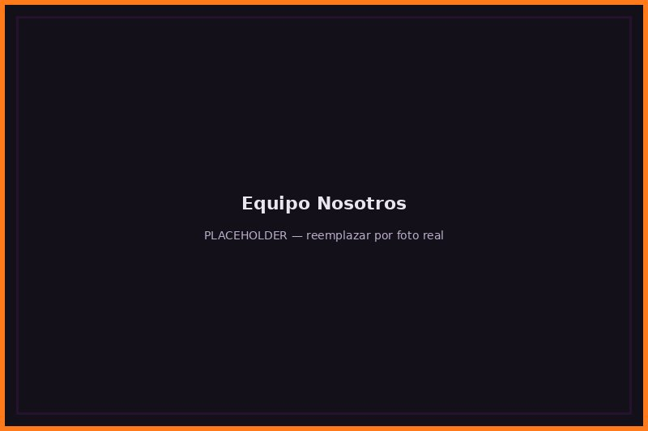

Sobre nosotros

Nuestra historia
Casas Embrujadas nació en 1899, cuando nuestro fundador descubrió que nadie quería comprar su propia mansión encantada y decidió especializarse en vender justamente ese tipo de propiedades a un público que sí las valora.
Hoy somos la inmobiliaria líder en propiedades con actividad paranormal certificada, con presencia en distintas regiones del país y un equipo de médiums, tasadores y agentes inmobiliarios trabajando en conjunto.
Nuestro equipo
Somos un grupo de estudiantes de Ingeniería en Informática de Duoc UC desarrollando este proyecto para el ramo DSY1104, aplicando HTML, CSS y JavaScript en un caso de negocio ficticio.